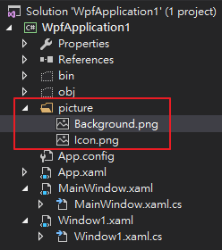
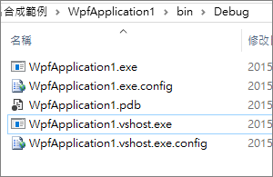
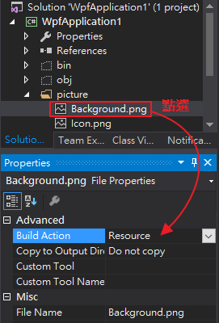
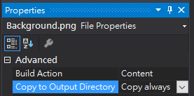
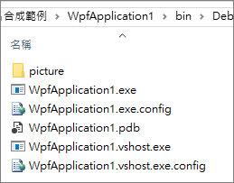

在Visual Studio裡，想在編譯時把圖檔輸出到Debug資料夾
譬如我有專門整理一個放圖檔的資料夾，
想要在編譯時也把整個資料夾輸出到Debug資料夾，
但是現在編譯時就是無法成功輸出。
那要怎麼做才好呢?
先對你想要輸出的圖檔做設定，點選該圖檔然後設定其屬性
該圖檔的BuildAction預設的選項是Resource，
Resource的意思是將圖檔嵌入到程式裡供內部程式取用。
那我們現在把BuildAction選項改成Content，
而Copy to Output Directory改成Copy always。
即可成功生成並內部包含該圖檔資料夾。

至於BuildAction的一些相關設定請參考
-
None: The file is not included in the project output group and is not compiled in the build process. An example is a text file that contains documentation, such as a Readme file.
-
Compile: The file is compiled into the build output. This setting is used for code files.
-
Content: Allows you to retrieve a file (in same dir as assembly) as a stream via Application.GetContentStream( uri ). For this method to work, it needs a AssemblyAssociatedContentFile custom attribute which VS graciously adds when you mark a file as "Content"
-
Embedded resource: embeds the file in an exclusive assembly manifest resource.
-
Resource (wpf only): embeds the file in a shared (by all files in the assembly with similar setting) assembly manifest resource named AppName.g.resources.
-
Page (wpf only): Used to compile a
xamlfile intobaml. Thebamlis then embedded with the same technique asResource(i.e. available as `AppName.g.resources) -
ApplicationDefinition (wpf only): Mark the XAML/class file that defines your application. You specify the code-behind with the x:Class="Namespace.ClassName" and set the startup form/page with StartupUri="Window1.xaml"
-
SplashScreen (wpf only): An image that is marked as
SplashScreenis shown automatically when an WPF application loads, and then fades -
DesignData: Compiles xaml viewmodels so that usercontrols can be previewed with sample data in visual studio (uses mock types)
-
DesignDataWithDesignTimeCreatableTypes: Compiles xaml viewmodels so that usercontrols can be previewed with sample data in visual studio (uses actual types)
-
EntityDeploy: (Entity Framework): used to deploy the Entity Framework artifacts
-
CodeAnalysisDictionary: A xml file containing custom word dictionary for spelling rules
參考資料：